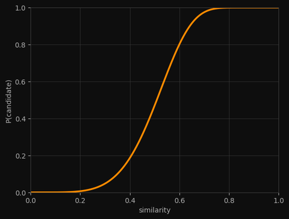

Close Encounters of the LSH Kind
Imagine you're building an antique shop, and need a signature verification tool. So you have a collection of signatures, each represented by a tuple of integers:
signatures = [
(1, 45, 2, 5, 10), # signature 0
(1, 17, 2, 5, 10), # similar to signature 0
(8, 99, 3, 7, 42), # different
(1, 45, 2, 5, 11), # similar to signature 0
# ...
# ...
# ...
]
Two signatures are similar if most of their positions match. You want to find all similar pairs.
The brute-force approach is O(N²) comparisons. For 10,000 items, that's ~50 million comparisons. For a million items, 500 billion. Can we do better?
Hash, baby, hash
Your first instinct might be: "Hash tables! I'll hash each signature and group identical ones."
matches = defaultdict(list)
for idx, signature in enumerate(signatures):
matches[signature].append(idx) # uses hash(signature) as a key
This finds exact duplicates instantly. But we don't want exact matches — we want similar matches. And regular hash functions are designed to do the opposite of what we need:
sig_a = (1, 2, 3, 4, 5)
sig_b = (1, 2, 3, 4, 6) # differs by just one position!
print(hash(sig_a)) # -5659871693760987716
print(hash(sig_b)) # 847769062341010709 <- completely different!
One tiny change, and the hash is unrecognisable. Similar signatures scatter across different buckets. We need a hash that keeps similar things together.
Divide and conquer
But what if, instead of hashing the whole signature, we would hash just parts of it?
signature = (1, 2, 3, 4, 5, 6, 7, 8, 9, 10, 11, 12)
# Split into 4 buckets of 3 values each
buckets = [
tuple(signature[0:3]), # (1, 2, 3)
tuple(signature[3:6]), # (4, 5, 6)
tuple(signature[6:9]), # (7, 8, 9)
tuple(signature[9:12]), # (10, 11, 12)
]
Now let's see what happens with two similar signatures:
sig_a = (1, 2, 3, 4, 5, 6, 7, 8, 9, 10, 11, 12)
sig_b = (1, 2, 3, 4, 5, 0, 7, 0, 9, 10, 11, 12)
# ^ ^ different positions
buckets_a = [(1,2,3), (4,5,6), (7,8,9), (10,11,12)]
buckets_b = [(1,2,3), (4,5,0), (7,0,9), (10,11,12)]
# ^^^^^^^ ^^^^^^^^^^^
# match! match!
Even though the signatures differ in two positions, they have identical buckets at positions 0 and 3. If we hash each bucket separately, these signatures will collide in at least two hash tables.
That's the core of Locality-Sensitive Hashing: split signatures into buckets, hash each bucket into its own table, and call two items "candidates" if they collide in any bucket.
Locality-sensitive hashing
Let's build this step by step. First, splitting signatures into buckets:
def split_into_buckets(signature, num_buckets):
bucket_size = len(signature) // num_buckets
return [
tuple(signature[i * bucket_size : (i + 1) * bucket_size])
for i in range(num_buckets)
]
sig = (1, 2, 3, 4, 5, 6, 7, 8, 9, 10, 11, 12)
print(split_into_buckets(sig, 4))
# [(1, 2, 3), (4, 5, 6), (7, 8, 9), (10, 11, 12)]
Now we build one hash table per bucket. Each table maps a bucket's hash to the set of item IDs that have that bucket:
def build_index(signatures, num_buckets):
# one hash table per bucket
index = [defaultdict(set) for _ in range(num_buckets)]
for sig_idx, sig in enumerate(signatures):
buckets = split_into_buckets(sig, num_buckets)
for bucket_idx, bucket in enumerate(buckets):
index[bucket_idx][bucket].add(sig_idx)
return index
And to find candidates for a query signature, we check all buckets:
def find_candidates(index, query_sig, num_buckets):
candidates = set()
buckets = split_into_buckets(query_sig, num_buckets)
for bucket_idx, bucket in enumerate(buckets):
candidates.update(index[bucket_idx][bucket])
return candidates
Let's see it work:
signatures = [
(1, 2, 3, 4, 5, 6, 7, 8), # item 0
(1, 2, 3, 4, 5, 6, 0, 0), # item 1 - similar to 0
(9, 9, 9, 9, 9, 9, 9, 9), # item 2 - different
]
index = build_index(signatures, num_buckets=4)
candidates = find_candidates(index, signatures[0], num_buckets=4)
print(candidates) # {0, 1} - found the similar one!
But Why Does This Work?
Let's think about when two signatures collide in a bucket. They collide only if every position in that bucket matches. If a bucket has 3 positions, all 3 must match.
So, what's the probability of that happening?
Say two signatures have similarity s — meaning about a fraction s of their positions match. If we pick one position, there's probability s that it matches. For the whole bucket to match, we need all positions to match:
With 80% similarity and buckets of size 3, there's about a 51% chance any given bucket matches.
Now, for two items to become candidates, they need to match in at least one bucket. The easiest way to compute this is to flip it: what's the probability they match in no buckets?
s = 0.8 # similarity
r = 3 # rows per bucket
b = 4 # number of buckets
Two items with 80% similarity have a 94% chance of becoming candidates. Not bad!
The S-curve
Let's see how this probability changes with similarity:
def p_candidate(similarity, num_buckets, rows_per_bucket):
return 1 - (1 - similarity ** rows_per_bucket) ** num_buckets
# With 20 buckets of 5 rows each (100 total signature length)
b, r = 20, 5
for s in [0.2, 0.3, 0.4, 0.5, 0.6, 0.7, 0.8, 0.9]:
p = p_candidate(s, b, r)
bar = "█" * int(p * 50)
print(f"sim={s}: {p:.3f} {bar}")
Output:
sim=0.2: 0.006
sim=0.3: 0.047 ██
sim=0.4: 0.186 █████████
sim=0.5: 0.470 ███████████████████████
sim=0.6: 0.802 ████████████████████████████████████████
sim=0.7: 0.975 ████████████████████████████████████████████████
sim=0.8: 1.000 █████████████████████████████████████████████████
sim=0.9: 1.000 ██████████████████████████████████████████████████
See the shape? There's a sharp transition around 0.5. Below it, pairs rarely become candidates. Above it, they almost always do. This is the S-curve — a soft filter that lets similar pairs through and blocks dissimilar ones.
Tuning the Filter
You can move the threshold by adjusting b and r:
threshold ~0.1 (b=50, r=2):
sim=0.3: 0.991
sim=0.5: 1.000
sim=0.8: 1.000
threshold ~0.5 (b=20, r=5):
sim=0.3: 0.047
sim=0.5: 0.470
sim=0.8: 1.000
threshold ~0.8 (b=10, r=10):
sim=0.3: 0.000
sim=0.5: 0.010
sim=0.8: 0.679
The pattern:
- More buckets (b) → lower threshold, catches more pairs (but more false positives)
- More rows per bucket (r) → higher threshold, stricter filter (but might miss similar pairs)
The approximate threshold sits at:
For b = 20, r = 5 that's about 0.55
Putting It Together
The full pipeline has three steps:
- Build matches: Hash all signatures into bucketed tables
- Find candidates: For each signature, collect items that share any bucket
- Verify: Compute actual similarity for candidates, keep those above threshold
That last step is important. LSH gives you candidates, not guarantees. Some dissimilar pairs will slip through (false positives) — the verification catches them. Some similar pairs might be missed (false negatives) — tuning b and r controls this tradeoff.
def find_similar_pairs(signatures, num_buckets, threshold):
index = build_index(signatures, num_buckets)
candidate_pairs = set()
for i, sig in enumerate(signatures):
for j in find_candidates(index, sig, num_buckets):
if i < j: # avoid duplicates and self-matches
candidate_pairs.add((i, j))
# Verify candidates
results = []
for i, j in candidate_pairs:
# Count matching positions
matches = sum(a == b for a, b in zip(signatures[i], signatures[j]))
similarity = matches / len(signatures[i])
if similarity >= threshold:
results.append((i, j, similarity))
return results
How Much Faster?
Let's compare. With 10,000 items:
- Brute force: 50 million comparisons
- LSH: ~10,000 × 20 = 200,000 bucket lookups, plus verifying maybe a few thousand candidates
That's orders of magnitude less work. And it scales beautifully — the number of candidates depends on how many truly similar pairs exist, not on the total number of items.
Conclusion
LSH is one of those algorithms that feels like cheating. You're trading a small chance of missing similar pairs for a massive speedup. In most applications, that's exactly the right trade.
The next time you see "similar items" appear instantly on a site with millions of products, there's a good chance LSH is working behind the scenes — a hash function that learned to keep similar things together.